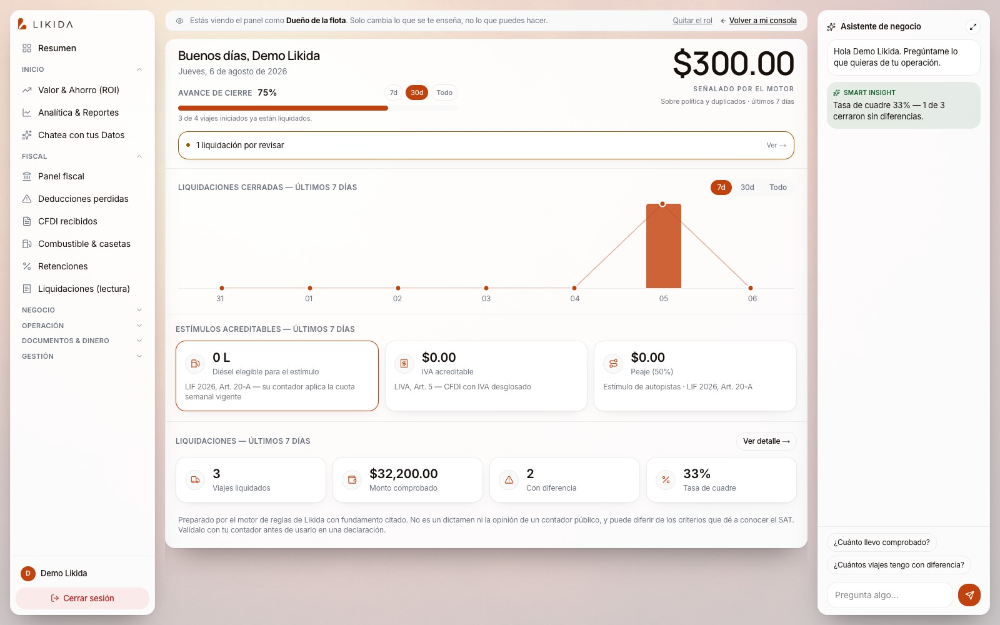
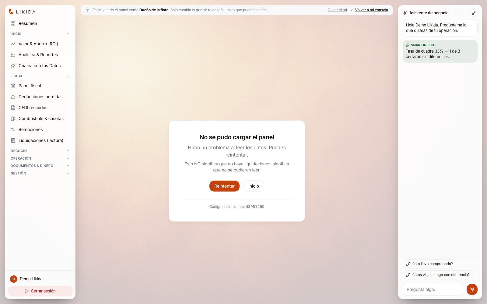
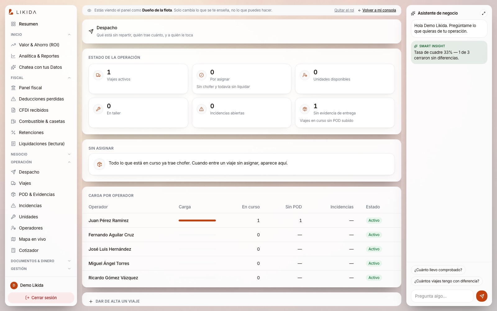

El viaje se liquida
solo. La captura, el cuadre y el comprobante — escriben el ERP por ti.
Likida recibe las fotos de tus comprobantes por WhatsApp, las cuadra contra el anticipo y la política de la empresa, y entrega la liquidación lista — con el respaldo fiscal de cada peso.
José Cárdenas · Vicepresidente
Llevamos más de dos años haciendo consultoría de IA. El dolor no lo inventamos: lo encontramos en un cliente transportista.
La consultoría
Dos años automatizando procesos para empresas. Vimos de cerca cómo se opera de verdad una compañía: los papeles, las capturas, los cuellos de botella.
El hallazgo
Al trabajar con un transportista apareció un problema que no era de una empresa: es de toda la industria. Cada viaje genera comprobantes, y cuadrarlos es una operación manual, lenta y cara.
La decisión
Crear Likida: la solución que ese cliente nos pidió, hecha para todos los transportistas. No como proyecto interno — como producto.
El back-office de una flota sigue corriendo en papel, WhatsApp, Excel y portales.
El combustible es el gasto #1
Entre el 30% y el 50% del costo operativo según la fuente. Cada litro debe tener comprobante — y el SAT lo exige.
La liquidación es manual
Un viaje genera fotos, tickets, casetas, peajes. Cuadrarlos a mano toma horas por viaje y días al cierre.
Se captura dos veces
Primero en el papel, luego en el ERP. Cada captura manual es un error posible — y un comprobante que se pierde.
Lo que no se comprueba, no se deduce
El comprobante que no llega, no cuadra o se paga mal, es dinero que ya no se recupera ante el SAT.
Fuentes: CANACAR y aseguradoras del sector citadas en la investigación de Likida (combustible = 30–50% del costo). Los contadores fiscales que la ley manda llevar — 15% en efectivo, viáticos, estímulos — hoy se administran a mano, o no se administran.
¿Qué herramientas usan hoy para liquidar y cuadrar?
ERP, hojas de cálculo, portales de casetas y gasolineras, WhatsApp, papel. Cuéntenos — no venimos a reemplazar nada de eso.
Somos un complemento, no un sustituto.
Likida se sienta al lado de lo que ya funciona: recibe los comprobantes por el canal que su gente ya usa, los cuadra, los valida y entrega la liquidación lista para su ERP — y si su ERP se llena a mano hoy, nuestro agente lo llena por usted. No cambiamos sus procesos: automatizamos el trabajo de captura que hoy es manual.
El agente hace el trabajo de captura, paso a paso.
El operador manda la foto
Por WhatsApp, desde su celular. Sin app, sin capacitación: la herramienta que ya usa todos los días.
El agente lee y clasifica
OCR con IA de visión: gasolina, casetas, viáticos. Extrae importe, fecha, proveedor y verifica el comprobante.
Cuadra contra el anticipo y la política
Compara contra el anticipo y las reglas de la empresa. Marca diferencias y faltantes en el momento — no al cierre.
Liquidación lista — y el ERP escrito
El PDF de liquidación sale solo, y el registro queda listo para su ERP. Su gente revisa excepciones, no captura.
Del cierre manual al cierre que se escribe solo.
- ✕ El operador junta tickets y papeles durante días.
- ✕ Un capturista transcribe cada comprobante al ERP a mano.
- ✕ Los faltantes se descubren al cierre, cuando ya es tarde.
- ✕ El comprobante que no cuadra se archiva… y se pierde su deducción.
- ✕ La liquidación tarda días y depende de que nadie se enferme.
- ✓ El operador fotografía el comprobante en el momento.
- ✓ El agente lee, clasifica y escribe el ERP por el capturista.
- ✓ Las diferencias y faltantes se marcan al instante, no al cierre.
- ✓ Cada peso queda amarrado a su comprobante — deducible o señalado.
- ✓ La liquidación sale el mismo día. Su gente revisa excepciones.
Lo que se ve al abrir Likida.



* Pantallas del producto con datos de demostración. Los nombres y cifras mostrados son de prueba.
No solo liquida más rápido: recupera lo que la ley permite y hoy se pierde.
La ley mexicana da beneficios fiscales que dependen de llevar contadores y respaldos que hoy se administran a mano — o no se administran. Likida los lleva por usted, con el fundamento citado.
Hasta 15% del combustible en efectivo
Regla 2.9 RFA 2026. Sigue siendo deducible si se lleva el contador correcto. Rebasar el tope tira el excedente completo — junto con su IVA.
Viáticos y faja de 50 km
RLISR 57 y 152: lo que se eroga dentro de la faja del operador o sin respaldo no es deducible. El sistema lo marca con su fundamento.
Estímulo de casetas (50%)
Regla 9.1.8 RMF 2026: bitácora conciliada con el TAG. Sin la bitácora, el estímulo es indefendible en revisión — con ella, es acreditable.
Reembolsos y monedero
El reembolso al operador debe ir por transferencia a nombre del RFC de la flota. El sistema lo valida antes, no después.
El cotizador del ahorro.
Estimación con supuestos editables — la cifra real se confirma con la revisión fiscal de sus comprobantes. Los cálculos de tiempo asumen 90% de automatización de la captura; el ahorro fiscal es la facilidad que la regla 2.9 permite si se lleva el contador — sin contador, ese dinero no existe en la declaración.
Buscamos dos empresas piloto para construir con ellas, no para ellas.
Queremos entender sus procesos reales — los que hoy se hacen a mano — para automatizarlos en el orden correcto, a la medida de su operación. El piloto es de ida y vuelta: aprendemos de ustedes, ustedes ven resultados desde el primer mes.
Entendemos su proceso
Documentamos cómo liquidan hoy: quién captura, qué se tarda, qué se pierde. Sin ese mapa no automatizamos nada.
Construimos a su medida
La solución se adapta a su política de gastos, sus unidades, sus operadores y su ERP — no al revés.
Mejoramos continuamente
Nuestro compromiso no termina en la entrega: cada mes buscamos qué otro paso de su operación puede automatizarse.
Lo que pedimos del piloto: acceso a su operación real — comprobantes, política y un canal de comunicación abierto. Lo que damos: la herramienta funcionando en sus viajes, con soporte directo y sin costo de implementación durante el piloto.
Déjennos revisar sus comprobantes del mes pasado.
Les ofrecemos una revisión fiscal sin costo de sus tickets del último mes: analizamos cómo están liquidando hoy y dónde hay dinero que la ley permite recuperar y hoy se pierde — combustible en efectivo fuera del contador, viáticos mal respaldados, casetas sin estímulo.
- → Comprobantes que se liquidaron tarde o nunca.
- → Pagos en efectivo que rebasaron (o no usaron) la facilidad del 15%.
- → Viáticos y casetas sin el respaldo que el SAT exige.
- → Estimación, en pesos, del dinero recuperable.
- ✓ Un mapa claro de su gasto de viaje del mes.
- ✓ Los puntos exactos donde se escapa la deducción.
- ✓ La proyección de lo que Likida recupera.
- ✓ Sin compromiso: el análisis es suyo, con o sin nosotros.
No solo hacemos su proceso más rápido: le devolvemos el dinero que hoy la ley ya le permite deducir y nadie está cobrando.
Su operación ya tiene los datos.
Nosotros hacemos que trabajen.
Liquidaciones que se escriben solas, comprobantes que respaldan cada peso y una revisión fiscal que le muestra cuánto hay por recuperar.